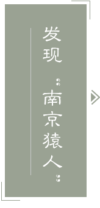

首页
汤山印象
汤山记忆
宜居宜业
汤山事记
汤山Life
吃~美食
住~旅憩
行~遇见
游~诗旅
购~值得
娱~悠闲
四季汤山
新闻动态
最新活动
全域旅游
汤山首页
汤山印象
汤山记忆
宜居宜业
汤山事记
汤山Life
吃~美食
住~旅憩
行~遇见
游~诗旅
购~值得
娱~悠闲
四季汤山
新闻动态
最新活动
全域旅游
千年古镇
之
古迹
陵墓
寺庙
别墅
“南京猿人”出土地点
发现“南京猿人”
春秋至隋唐时期地下采矿场
寺桥
由“汤泉市”形成的老街
阳山古采石场
阳山碑材
“红崖天书”与阳山碑材
阳山古井
金陵驿-文天祥诗碑亭
民国三塔
置顶 ↑
您的位置
>
首页
>
汤山记忆
>
人文历史
Humanistic History
千年圣汤
Millennium Springs
千年古镇
Millennium Town
古迹
Historical Site
1993年3月，从边开放边清理的汤山葫芦洞内东南面的洞壁下4米深处发现一个淤泥密封的小溶洞，由于从此洞内出土了猿人头骨化石，便被称为“猿人洞”。猿人洞的面积约为20平方米，平均高度约为2米。当S年3月13日，民工邹巧根等在清理洞内堆积物时意外发现一个头骨化石。经专家鉴定，确认这是一个比较完整的猿人头骨，它包括头盖骨、眼眶骨、骨、部分颧骨和上颌骨，推测是一年轻女性的头骨，称之“1号头骨”。此后，在清理工作中又发现了另一个猿人的头盖骨，据推测是一男性的头骨，被称为“2号头骨”。猿人洞内的这一重大发现将南京地区的人类活动向前推进了数十万年，这一发现震动了中外科学界，被评为“1993年全国十大科技新闻”之一，和“八五期间全国十大考古新发现”之一。 最新的科学测定表明：“南京猿人的年代距今58万年至62万年之间”(详见2001年2月25日《扬子晚报》所载《揭开“南京猿人”年龄之谜》文)。从目前情况看，“南京猿人”甚至比“北京猿人”还要早一些。更有意义的是，“南京猿人”，年龄的研究成果为证明人类起源多地域的进化模式,提供了有力的证倨。猿人洞作为“古人类头骨化石出土地点”被列为江苏省级文物保护单位。

1993年3月13日，汤山葫芦洞爆出惊天新闻：在洞下4米深处一个奇妙的洞中洞里发现一具完整的猿人头骨…… 在第一时间里南京地区各大报纸几乎都在头版以显著的位置刊登汤山溶洞发现猿人头骨化石的消息。醒目的题目标明： “我国古人类研究的重大发现” “人类学上的重大发现” “初步认定，距今12.7至40万年之间，完整性好于北京猿人头盖骨” 中国科学院南京地质古生物研究所、古脊椎动物与古人类研究所提供的一份报告指出：“这个猿人头盖骨相当完整，长约16厘米，宽约13厘米，眉脊硕大，向两侧突出，左眼眶完整清晰。骨壁比现代人厚得多。经初步鉴定，这是一个与著名的北京猿人非常接近的猿人头盖骨。” 这一重大发现，对研究人类起源、演化、迁徙和分布提供了宝贵的材料，具有十分重要的意义。现在，“研究组”已完成第一篇论文。将以中英文在科学通报上发表……消息如炸雷，顿时传开。沉寂的南京古生物研究所沸腾了！幽静的汤山溶洞沸腾了！惊喜之余是回忆。历史不会忘记汤山猿人头骨发现的前前后后；历史不会忘记为此劳碌奋斗的人们！ “葫芦”问世 1990年3月22日。傍晚，夕阳西斜。雄伟的汤山主峰团子尖北麓，陡峭高耸的“掌子面”上还有人影晃动。原来，几个“架头工”还想放—炮。蹊跷的是，他们往打好的石头眼里灌了5包药，也不见药“长”上来。“恐怕有裂缝”，于是他们用纸团塞死眼底，再灌药，点火，轰——没想到竟炸出个竹篮子大小、月亮般圆的洞。摸摸洞壁有一尺多厚，伸头瞅瞅黑古隆冬，往里摔石头鸦雀无声…… 次日清晨，几位采石兄弟带着长绳、电筒攀崖探洞。“别争了，我先下，没情况我轻摇绳子，有情况我不摇绳子……”干了18年采石的场长张德明一马当先，握着大绳滑落到十五六米深的洞底。洞内，豁然开朗的大厅、五彩斑斓的钟乳、丁冬作响的水滴、奥妙无穷的化石，使几位老采石目不暇接、乐而忘返。然而，他们没有带回半截钟乳，装在他们心中的一句朴素的话语是：“镇上有指示，发现溶洞要保护好。” 情况很快传到村委会。有人主张不上报，理由是1984年发现雷公洞，采石场当年就损失6万多元，6年来少说已损失30多万元。23日下午，村支部书记潘传金召集了紧急会议，作出“顾全大局，立即汇报”的决定。 当晚镇党委书记徐和宁电话指示派出所和联防队对溶洞严加看管。24日，镇长洪武龙下洞核实情况后遂向县政府、文管会汇报。因为此洞两大厅联袂而生，状似一只巨大的葫芦，便被称作葫芦洞。 悬赏万元 葫芦洞喜见天日后的第6天，县政府即出面牵头，邀请市城乡委、文管会等部门领导和有关专家赴汤山考察溶洞，副县长朱善琳主持调查会。汤山镇人民政府更多次上门邀请南京古生物研究所的专家前往溶洞考察和发掘。专家们采集到丰富的动物化石。据初步鉴定，这些动物化石有熊、豺、獾、三门马、犀牛、肿骨鹿和葛氏斑鹿等15种。根据洞内动物骨骼零碎，有磨制的痕迹，又以食草类动物化石为主的现象，专家们提出洞中可能曾有猿人居住，可能有猿人遗骸的推断。 可是，近3年来，始终没有找到猿人的遗骸。这是专家们的遗憾，也是汤山人民的遗撼。为了便于专家们进洞考察，汤山镇政府于1992年元月份打开洞门，架设铁梯。 7月21日，庞顺根县长在县府主持召开了汤山旅游资源开发会议，要求有关部门支持汤山溶洞的综合开发。并研究确定了补助资金。会议特邀南京古生物研究所副研究员许汉奎、钟石兰等参加，听取了专家们对溶洞内化石发掘、景点开发的意见。 为了找到猿人的遗骸，汤山旅游公司对清洞民工的计酬不搞“承包制”，实行“点工”，即要求他们一点一点地清土，捡出每一块骨头。该公司经理宋荣祥、负责清理溶洞的退休干部陶胪鸿在去年11月和今年初两次召集民工宣布：悬赏一万元寻找猿人头盖骨和牙齿。 古人云“重赏之下必有勇夫”。“重赏”，加重了找“宝”人责任心的砝码。 顺“藤”摸“瓜” 3月8日，从边开放边清理的葫芦洞中又爆新闻：“在两节‘葫芦’交接点东南面洞壁下4米深处发现一个密封的小溶洞。洞内，除了珠光宝气的钟乳、石花外，特别惹人注目的是洞顶一大片似被长期烟熏火燎后留下的“黑糊状”。据挖开“洞门”，最先入洞的民工反映：进洞时，曾闻到一股浓浓的烟火味……这个奇妙的小溶洞的发现，为几天后顺利找到猿人头骨打开了凯旋之门。 这个小溶洞的发现，是汤山镇地方领导为增加新的景点，抓住溶洞中部南端洞壁下一条裂缝的“藤”，指示民工顺“藤”摸“瓜”挖掘出来的。应该感谢民工的苦干加巧干。当挖掘到地下4米深处时，没有新的发现，他们创造性地用直径6.5钢筋朝四周捅。3月8日，“探测器”终于在东南面堆积物中“落空”了…… 发现头骨 “3”，似乎与汤山溶洞的每一次重要发现有缘。葫芦洞问世于1990年3月，“洞中洞”被打开于1993年3月，而汤山猿人头骨发现于1993年3月13日。 这是一个春雨如丝的日子。小溶洞清挖工作已整整6天，洞内大部分“地面”已普降l米。眼下，只有东南面一小片堆积物还保留着原始状态。 上午，约摸9点30分，年近50岁的民工邹巧根一镐凿出个“骷髅”来。实事求是说，老邹因刚来溶洞打工，才上班第二天，对于“头骨”的价值不够了解。赶巧的是，他在农村“常帮人家抬棺材、迁坟”。因此，对于这类东西颇熟悉，便随口说了句“哟，一个骷髅骨”。 “骷髅”，一旁掘土的工程队长刘林生敏感地应声叫道，“当心，这可能有价值”。一个比较完整的头骨和紧挨着头骨边的几根肢骨被小心翼翼地捧到洞内安全地带。不一会儿，旅游公司宋荣祥经理用两张报纸认真地包好头骨、肢骨，装入一小马粪纸盒中带回镇旅游公司办公室。随即，宋经理拨通了南京古生物研究所的电话。 3月19日，南京古生物研究所专家穆西南、穆道成带着相机来到汤山。当他们见到这一“头骨”时，激动不已，一致认为很可能是猿人的头骨，即使不是，也是高级灵长动物，猩猩类的头骨，也是十分有价值的发现。 火速护宝 1993年3月23日，南京古生物研究所“汤山溶洞动物化石探讨课题组”的专家们根据现场观察和照片分析，确认在汤山“洞中洞”里发现的“头骨”是猿人头骨化石，并根据伴生的动物群化石年代，初步认定头骨距今约为12.7万年至40万年之间。 当日，中科院南京古生物研究所即向南京市人民政府递交了《关于南京汤I山发现猿人化石的紧急报告》，阐明了保护这一猿人头骨的重要性和紧迫性。 几乎在同一个时间里，李英俊副市长在报告上批示：“此乃大事一件，要高度重视，立即采取措施，紧紧依靠专家把事情办好办妥……” 3月24日上午，市政府副秘书长吴迪祺率市县有关部门领导和专家，迅速地接收了“国宝”。汤山猿人头骨已经得到安全、科学的保管，正待进一步研究。
伏牛山古铜矿采矿场，是一处竿见的、鲜为人知的，兼具科学、教育、旅游等多重价值的古代遗存。 伏牛山古铜矿采矿场位于汤山集镇东北面约4公里的南京九华山铜矿伏牛山矿区银孔山麓108(海拔108米)工作面，距地表约30余米。采矿场共分“4个采场，上下层层叠压，相互之间以纵横交叉的爬窿、竖井相连，总面积约1000平方米”。其中最下层的采场东西长23.1米，南北宽20.6米，最高处达5米以上。由于长期渗水和淋滤作用，采场穹隆状的顶部形成密布的、长短不一的氧化锰质的钟乳奇观(又称矿花),最长的钟乳约1.5米。古采矿场先后出土过陶灯、瓷碗、铜锤等生产工具和生活用具。据专家现场观察，对矿花形成时间计算，和对出土文物的断代，初步认为该矿场的“起讫年代当为春秋至隋唐时期的递物。”(引自《南京史志》1987年第4期《南京伏牛山古铜矿采矿场的发现及意义》)也就是说它已经有1500至2500年的历史。古采矿场西北不远处尚有采场巷道口、采场废石堆和冶炼渣堆场等遗存。 值得大书特书的是，汤山伏牛山古采矿场在采矿技术上采用的是“分段法螺旋道开采工艺”(又称之字形斜坡道)。这一采矿工艺，在西方采矿技术、设备均处世界领先地位的瑞典等国，直到本世纪五十至七十年代才完成从试验到应用和推广。事实证明，我国该项采矿技术的运用至少领先西方1000多年。 汤山伏牛山古铜矿采矿场，是70年代初工人在巷道掘进作业中发现的。在特殊的历史时期，九华山铜矿给予了妥善的保护。80年代，省市有关部门两次组织地质、矿冶、考古、规划、旅游等学科的专家学者实地考察研讨，并作出了长期保存这一文化遗存的决定。中央电视台在《全国新闻联插》中对该古铜矿采矿场的发现作了报道。 汤山伏牛山古铜矿采矿场的发现有重大意义。当年参加考察的季土家(江苏省社会科学院研究员)撰文指出：“它为我们了解和研究我国悠久的矿冶史提供了不可多得的实物材料，为我们创建古矿冶博物馆对背少年进行复国主义教育提供了物质条件，也为南京旅游业呈献了一个新的重要景点。”我们盼望这一至今仍藏在深闺人未识的“新的重要景点”能够早日开发。 原载于《江宁日报》2001年6月15日
寺桥是汤山的一座老桥，它横卧在蜿蜒的汤水河上，桥面走过世世代代乡亲。 桥对岸的山脚下，有一座古寺，名圣汤延祥寺。相传桥因寺而建，改名寺桥。倨方志记载，廷祥寺乃唐代德宗年间著名画家韩滉所建。岩按寺的年代论桥，那么此桥的历史也该1200多年了。当然，寺桥是否唐代所建谁也说不清，况且桥已没有了，也无法考证。 寺桥呈拱形，远看如虹。桥宽丈余，桥孔下河面宽约3丈，整座桥全是青石砌成。如果说寺桥开始只是方便了香客过河烧香的话，那么随着汤山的发展，这桥的作用便渐渐超出了其名称所赋予的含义。宋代，延祥寺逐步形成自由买卖的场所——汤泉市，这桥是人们出人集市的通道；明清，汤泉市逐步发展成一条繁华街道，这桥是连接南街和北街的纽带；民国初年，延祥寺改成了小学校，从那时起直到上世纪90年代初小学迁址，80年里，无数学子背着书包风里雨里从桥上走过。古代名人也有从这座桥上走过的，做过宰相的王安石也是走过此桥才写出《题汤泉壁示诸子有欲闲之意》诗的；清代大诗人袁枚也是走过此桥才写出“廷春寺里证前因，二十年前借住身”的。 寺桥上下都有风景。登上桥顶凭栏看去，清浅的河水里躺着悠长的桥影，桥影里叠印着蓝天白云、沿河人家的阁楼、炊烟……偶尔，有立着鱼鹰的小船穿过桥孔驶来，便会惊碎一河的梦境。桥上人也“好看”，除了毒日当头的夏天正午，桥上似乎总会有人停留。一年四季，去河对岸洗温泉澡的男人回头时总爰将毛巾搭在桥栏上，站一会儿，遇到熟人便啦呱几句；一早一晚过桥拎温泉水的女人回头时总要在桥上歇一会，碰到说得来的定会说上一大堆张家长李家短的闲话；下午，逃学或者放学早的孩子常常滞留在桥上，胆大的还把桥栏当作马来骑；黄昏以后，也偶有情侣在桥上相会，不过小镇不比城市，扶着桥栏背对桥面的男女们总要相距尺把远。寺桥有凄美的传说。相传当年建桥时要用人头、人血祭神，便从外地买来一个“侉子”，杀了。从前天阴下雨时，有人听见桥孔里曾发出沉闷的埋怨声：“奶奶的，俺都快扛不动了！” 寺桥消失于上世纪70年代初。一场百年未遇的洪水冲毁了河两岸许多房屋，为了拓宽河面，便将桥拆了。随后在原挢址的东侧建起一座平桥，取名寺洪桥。 原载《南京日报江宁版》2003年6月28日
汤山北麓的古延祥寺（该寺在原汤山小学内）前，本来有一条街道，这就是汤山镇的老街。如今这条老街虽己时过境迁，甚至踪影难觅，但它悠久和屈辱的历史却是后人应该永远记住的。 提起老街说来话长。唐朝德宗年间，时任浙西观察使（一说任镇海军节度使）的韩滉（又为画家，有名画“五牛图”传世）因小女在汤山沐浴温泉治愈了“恶疾”，遂慨然解囊建造了圣汤廷祥寺，以谢泉神。此寺建成后香火旺盛，加之该寺前有山涧流过、又有温泉出露，烧香的、洗澡的，游玩的各色人等多会于此，逐渐形成一处集市，古称“汤泉市”。 所谓“市”，即集市贸易的场所，大多为老百姓因地制宜自发形成。“市”在历史上的出现是比较早的，《战国策》上就有“争名者于朝，争利者于市”的话。据宋代《景定建康志》记载：“汤泉市，在上元县神泉乡汤山延祥院前，去城六十里。”这一记载将“汤泉市”的具体位置表述得十分具体。到了元代，《至正金陵新志》仍称“汤泉市”，并将其列入金陵地区72古市之一。明清500多年间，汤山地区的经济、人口得到进一步发展，位于延祥寺前的“汤泉市”依托汤涧（汤水河）土一座拱形“寺桥”，（此桥1972年拓宽河道时拆毁）向南北方向延伸，形成汤山街。1937年12月，侵华日军进犯南京时，汤山园地处要冲首蒙其害。这条当地繁华的古街道被日寇付之一炬烧毁殆尽。然而，老街千百年的形成史是一把火能够烧掉的么？老街的市井旧貌、商铺店面、陈年往事仍然留在老人们的记忆里。 老街长约1华里，南端穿过今温泉路1号部队大院，达今八三医院军人浴室前；北端至唐家湾（清代唐姓大户居此河湾，故名）一带。其繁华地段在寺桥南侧，即所谓“下街头”。街宽约两丈，铺的是二片（半大的石块），街心铺一条大麻石板。大麻石上，有一道被独轮车推出的深约半寸的辙印。 老街，天造地设一般坐落于山水之间，西面，低矮的山坡上树木蓊郁、气息宁静；东面，宛转而又清浅的汤涧缓缓地流淌。 老街，商肆栉比、古色古香，有杂货店、百货店、窑货店、豆腐店、水果店；有米行、荤馆、茶馆、客栈；当然，还有得天独厚的温泉澡堂子。 老街，公馆、别墅林立。其东倒由北向南依次排列着俱乐部、陶庐、张公馆（原张静江公馆，即今蒋介石温泉别墅）…… 老街，走过许多历史名人，仅以民国时期而言就有：李宗仁、于右任、冯玉祥、张学良和赵四小姐等。据《金陵野史》记载，“那时每逢星期天，在汤山林荫遭和小街上，常可看到银须飘拂的林森（时任国民政府主席，笔者注）和以诙谐著称的吴稚晖。蒋介石宋美龄夫妇也常来此盘桓。 老街，颇多秘闻，有过沉重的历史负荷。1929年3月.1931年2月，因为政见不合国民党元老李济深、胡汉民先后被蒋介石软禁于此。“九一八事变”前后，名噪一时的日本女特务号称“帝国之花”的南造云子化名廖雅权潜入军人俱乐部，利用色相刺探情报…… 老街，逸事趣闻也不少。其中，“蒋介石买水果”便是其中一则。抗战前蒋来汤山，大多住在军人俱乐部。一次他大概想自由活动一下，便避开卫士单身一人从俱乐部西面的小门踱出来，逛到寺桥附近一家朱姓开的“九如”水果店买水果。卫士们很快发现委员长不见了，气氛顿时紧张起来。卫士长赶紧吹哨子集合人跑步上街向南北两个方向分头寻找。令卫士们哭笑不得的是等找到蒋时，他已回来在吃果子了。 老街，尚有遗迹可寻！从原汤山小学大门口往南行不远，在一堵隔死的围墙前有一段10多米长的街道，至今还保留着些许昔日的风貌。天气晴和的日子，往住会有拄杖老人伫立的身影。这劫后余烬，是历史的见证，也是我们透视老街的窗口。
今天我们见到的阳山碑材遗留处，历史上曾是一个大型的皇家采石场，“现存古采石场遗迹约43万平方米”(江苏省《文物志》371页）。古采石场呈东北——西南向，长约600米、宽100至200米不等。其前半部分低洼如谷地，后半部分随山势抬高而隆起。如果要找出前后两部分的分界点的话，很明显碑座处就是分界点。 一般认为碑座以上为明代开采区。游人在三大碑坯处，特别是立于碑身与碑首之间，可以明显看出这里的山体被切蛋糕一般生生地切掉了。从这里开采的石料化作明故宫的基石、柱础，化作明孝陵神道上的石兽、翁仲……面对没有运走的屹立如山的三大碑坯，游人往往惊其体量之巨、叹其工程之艰，却不知大自然孕育之奇妙。我们知道，在缺少花岗岩的南京地区，要在成层性、易破碎的沉积岩层里寻觅三大碑坯这样的石料是很困难的。那么，为什么在阳山能找到这样巨大而又完整的石料呢？对此，夏树芳教授在他所著《金陵风貌》一书中曾作过科学的解释：惟独火石峰（即阳山古采石场所在的山峰，笔者注）正处于一个小型的盆状向斜的中心部位，四周的压力都集中到这里，相互抵消，者层很少产生破裂，加之这里的石灰岩层厚，要开采大块完整的石料比较方便。”虽说地下有“宝”，但在地表能看出来，也非易事。是谁有此等“透视”能力，选择这儿开采巨石呢？相传是那位为朱元璋出谋划策被人们称为“半仙”的刘伯温。这里，传说的真实性并不重要，重要的是事实雄辩地证明：在地质科学尚未萌生的明代初年，我们祖先已经具有非凡的聪明才智！ 阳山古采石场的前半部分（即碑座以下），因为没有什么“看头”，而被轻视忽略。其实被游人们“走过场”的前半部分，有更加深邃的历史风景线，是值得驻足流连的。据扛苏省《文物志》记载：“阳山，古称雁门山，是孔山山脉的主峰，山体为石灰岩构成。自六朝以来采作雕刻或建筑用材。”原“金陵百花>杂志所载《汤山大石碑》文甚至认为：“六朝以来，历代南京的建筑柱础、石刻等大多取材于此。”有关专家推测，南京市麒麟镇宋武帝刘裕陵前的麒麟和天禄，句容市萧绩墓前的辟邪和石柱，乃至丹阳市陵口镇齐、梁两代帝王陵墓区内众多的石兽所用的石料，可能皆采自阳山古采石场。名闻遐迩的阳山石的特点是石质坚硬，外观呈黝黑色，有白色的纹路，即所谓“黑底白筋”。据笔者观察，句容市石狮沟村粱武帝萧衍的第四子萧绩墓前所存辟邢和神道石柱，皆有“黑底白筋”，尤其是身带座高4米、长3.6米的东石辟邪身上那粗大的“自筋”与阳山古采石场凹凸不平的采石剖面上的“白筋”是极其相似的。 众所周知，采石的规律总是由前往后的，根据古采石场的地形特点可以断定阳山古采石场“前半部分”开采的时间早于“后半部分”。有关史料表明，它比“后半部分”明代开采区要早1千年左右。相对而言，“前半部分”才是真正的古采石场。游人驻足这片开采一空的山间广场，不难看出“广场”几乎本与两侧壁立数丈的山崖同高。有人计算从这里取走的石料少说也有数十万吨（包括石碴），若用现代10吨大卡车装载的话要装数万车！据专家考证，从这里运出的较大的石料，都不是用车载的，而是用滚木的方法来运输的。为了减少摩擦力，数九寒冬时在路面上洒上水待结成冰，再用粗圆的滚木垫在石坯下，人畜共拉慢慢滚动运移至目的地。如果仔细观察，阳山古采石场的出口处，一条比较宽阔、随山势逐渐下降的古道路遗迹至今仍然依稀可辨。 阳山古采石场，给人们留下时光隧道一般思考和探索的空间。
汤山镇西约7公里处的阳山（又称孔山、羊山、雁门山等）山腰里横亘着三块尚未雕凿完成的巨型石碑。该碑巍然屹立、气魄雄伟，不仅是全国碑中之冠，而且堪称“世界上最大的石碑”。由于此碑体量惊人，周围又有不少丽景秀色、古迹名胜，海内外观光者、考察者歆羡纷至，一年四季游踪不绝。 巨碑概况 大石碑分碑座、碑首、碑身三大块，皆散布在阳山西南麓。游人在宁杭公路坟头站下车北行，过仿古牌坊、攀上山坡，走近一处两面山崖壁立的广场，那古朴的碑座便映人眼帘了。碑座呈氏方体，约长26米、宽16米、高12米，若以一般石灰岩的比重2.7计算，重约13000余吨。此石除北面与山体相连及底部留有几个支撑的石座外，已经基本上凿空。远观碑座，似一只硕大无朋的乌龟卧伏于山坳中；近观此石，风化较严重，故人称“烂石碑”。距碑座300余米处的山坡上，矗立着椭图形的碑首（又称碑额），碑首约长20米、宽8米、高10米，重约4000余吨。碑首上通体留有据说是拟雕蟠龙的14个石牙，由于此碑石形状奇特，又有石牙助威，令人有庞然怪物之感。此石除底部留有3排支撑的条百外，余皆与山体脱离。碑首旁横躺着“酷似一道巨墙屏障”的碑身，碑身约长50米、宽4.4米、高12米，重约7000余吨。走近碑身细看，除东而和底部的两处支撑点尚与山崖相连外，其余均与山体凿离。由于碑身底部几乎被凿空，便形成了一个巨石压顶、避风避雨、冬暖夏凉的敞厅。 碑身与北面的山崖间，有一条人工开凿的巷道，宽仅2米，狭窄深邃，人行其问如入幽谷，仰视苍穹大有“一线天”之慨。此处乃阳山三碑石最艰险壮观处，游人至此无不叹为观止。若将碑座、碑身、碑首一一垒起，通高约72米余，相当于24层楼高，其重量则达24000余吨。难怪清代著名诗人袁枚在他的《洪武大石碑》一诗中惊叹：“碑如长剑青天倚，十万骆驼拉不起！” 碑材来历 关于汤山阳山碑材的来历，大石碑上未留下碑文，史书上的记载也甚少。幸而明代建文进士、永乐年间翰林院编修胡广曾与同僚大学士解缙、侍讲金幼孜一起游览阳山，并写下<游阳山记》。该游记具体生动地记叙了作者所见到的阳山碑材开采情况和壮观的碑材景象，具有很高的史料价值。 《游阳山记》开头即云：“永乐三年(1405)秋八月，皇帝因建碑孝陵，斫石于都城东北之阳山，得良材焉。其长十四丈有奇，阔不及长者三分之一，犀丈二尺……越九月戊午，特命翰林臣往观。”这里，对阳山碑材开采的时间、地点和原因的记载是十分清楚的。（其中“得良材焉，其长十四丈有奇”云云，凡去过阳山碑材者一看便知这里所指“良捌”正是碑身。）三位大臣来到阳山下，见到民工们住宿的“草茇”数百间，听到山上采石工地上“邪许之声相应”（邪许ye hu，劳动时众人协同用力发出的呼声）。他们“仰见碑石，穹然城立”，皆“叹息所未尝见”。接着，又冒险从碑石的左面“攀跻而上，一人引手，一人下推”，好不容易才爬上碑顶…… 除了《游阳山记》外，明代《万历上元县志》对阳山碑材也有记载。该志云：“雁门山，在县东六十里……一名阳山，孝陵碑捌取之此。”该志还附录了与明代胡广同朝为官的文渊阁大学士杨荣吟咏阳山碑材的诗一首，其中有“高祖圣灵端有在，穹碑万古树”(cuan wan指像峻峭的山峰耸立)。诗后还有一小注云“碑十四丈”。清代对阳山碑材的记载较多。《同治上江两县志》载：“明永乐三年(1405)，成祖朱棣为其父太祖朱元璋记功而命凿。”清人叶奕苞《金石录》载：“江宁府麒麟门外坟头山中有大石，长五丈余，阔半之，士人青是孝陵碑材……”《白下琐言》的记载则更为具体：“麒麟门外坟头地方，道旁有大碑，相传明初所造，将备孝陵用者，盖当时因笨重难运耳。”根据以上记载可知，阳山碑材为明初永乐三年至四年（1405至1406）明成祖朱棣为其父明太祖朱元璋修建孝陵而凿，拟雕造“大明孝陵神功圣德碑”，来歌颂其丰功伟绩以期永垂不朽的。 值得一提的是在阳山碑材的后面还有一个特殊的历史背景：众所周知洪武三十一年(1398)，朱元璋去世，其长孙朱允蚊即位年号“建文”，朱允炆即位后感到藩王势力过大威胁其皇位，便推行削藩政策。这激起了分封北平的皇四叔燕王朱棣的反对，也使早已觊觎皇位的朱棣找到了发难的口实。朱棣打着“清君侧”的旗号发动“靖难之役”，经过三年战争夺取帝位，年号“永乐”。朱棣从其侄儿手中夺取政权以后，采取了一系列巩固政权的措施，其中之一就是为其父树“神功圣德碑”以此表示“孝心”，笼络人心。除了以上“政治原因”以外再加上朱棣的好大喜功，这样特大的碑材开采工程便开工了。由于封建帝王昏庸胡来贪大求高，无视客观运载能力，结果落得个“材大由来世莫收，此碑千载空悠悠”的下场，而不得不另选一块只有此碑十分之一大的小碑（通高8.87米），立于“四方城”内、孝陵之前。还有一种说法是朱棣夺取帝位后，一心想迁都至他的“龙兴之地”北京，倾力于新都城建设，况且阳山碑材实乃碑重难移，于是大石碑尚未凿成便不了了之，遗留至今。 近600年越去了，雄伟壮观的碑材上一锤一凿的痕迹依然清晰可辨，它是我们祖先勤劳智慧的印证，也是中华民族创造精神的写照。早在1957年阳山碑材即被公布为省级文物保护单位。1983年，在“金陵新姿揽胜评点征联”活动中，阳山碑材以“绝世碑材”的赫赫声名人选“新金陵四十景”之一。同时入选的楹联为：石上有痕，已为前朝记功过；碑中无字，留与后人论是非。 纷纭的传说 历史留下了没有搬走的阳山碑材，也留下无数关于碑材的民间传说。这些传说令人扑朔迷离，又十分耐人寻味。阳山碑材为什么脱离实际搞得这么大呢？相传，当年朱棣从侄儿建文皇帝手中夺取皇位后，虽说大权在握但因搞的是宫廷政变，心中毕竟有点虚。因此，他想为其父朱元璋树立一块特大的“功德碑”来表示自己的孝心，希望得到九泉之下的父皇的谅解和保佑，更重要的是借助此碑来赢得天下臣民的好口碑。负责开采阳山碑材的官员深知皇上的“用心”，可是黄金虽贵也有价，这碑总得有个尺寸呀。于是他跑去请示皇上，皇上挥挥手说了四个字：“要大、要大”，官员不敢再问，退了下来。他闭门家中想了3天，也想不出这“要大”到底要多大？于是他硬着头皮又来请示皇上。皇上哼了一声提高嗓门又说了四个字：“越大越好！”那官员再也不敢问了，他一口气跑到阳山传达皇上“越大越好”的圣旨。石匠们哪敢抗命，于是便根据山势凿取碑石。碑座呢，原是一座山冈；碑帽呢，原是一个山头；碑身呢，原是一道山梁。 后来，因为这碑凿得太大，没法运输，有人说那位负责采石的官员被杀了头，也有人说总算皇上没忘记他“越大越好”的金口玉言，也就不了了之了。 阳山碑材为什么没完工就停止开采了呢？相传，这是因为“周颠仙人”发话，朱棣皇帝害怕的缘故。周颠是传说中的仙人，曾随朱元璋征陈友谅，因为说话疯疯癫癫故人皆呼之周颠。据说朱元璋因恶其“妄言惑众”，曾派人把他投到江里，结果周颠竟毫发无损地出现在朱元璋跟前望着他发笑。朱元璋大惊，从此不敢怠慢周颠，还亲自撰写了《周颠仙人传》以记其事。明太祖朱元璋曾被周颠戏弄过的事儿，想必永乐皇帝朱棣是知道的，因此，他不敢不听周颠仙人的话，在大石碑即将完工前下令停止开采。 那么，周颠仙人发了什么话让朱棣皇帝这么害怕呢？据说当时盛传：大石碑完工，朱棣的皇位完蛋。这在：袁枚的诗《洪武大石碑歌》中也有所流露。该诗云：“周颠仙人大笑来，天威到此几穷哉”。相传上述民谣正是周颠散布的。 阳山附近，有几个与阳山碑材相关的村名，值得一提。相传，在进行大石碑施工中，皇室从全国各地召来几千工匠。为了赶进度，规定每人每天的工作量以3斗3升凿下的碎石屑为标准，如果连续3天完不成定量则将被处死。开始工匠们还可以勉强应付，后来由于石碑越凿越高，施工艰险力不胜任，因此而丧身的石匠有500人之多。大石碑下宁杭公路边的坟头村，据说便是因埋葬惨死工匠而得名的。 当地，有一首世代流传的民谣：“东流到西流，锁石到坟头。东也流（留），西电流（留），中间锁石锁坟头”。这里的东流、西流、锁石、坟头都是村庄名。这则民谣的含意是十分清楚的，你要搬走大石碑吗？休想！东边也留住它，西边也留住它，中间呢，锁石村把大石碑锁死在坟头，永远也出不来了。民谣中有民意，这是对封建统治者不自量力的有力嘲弄，对研究阳山碑材也有参考价值。
近年来，有人研究贵州境内的“红崖天书”，认为与我市汤山阳山碑材存在特殊关系。他们或称“阳山藏着朱元璋的尸体”，或称“阳山碑材是建文帝的一座空墓”云云。以上对“红崖天书”的全新的破解引起学术界和媒体的关注，尤其在南京地区产生较大的反响。“红崖天书”是怎么一回事，它与阳山碑材究竟有没有关系呢？ “天书”来龙去脉 “红崖天书”又称红崖碑，是中国八大奇书之一。它位于贵州省关岭苗族布依族自治县境内的晒甲山（相传诸葛亮南征曾屯兵晒盔甲于此）的一片褐红色的悬崖峭壁上。其“字”参差错落、大小不一，大者1米见方，小者10至20公分。“从岩下仰望，字青石赤，仿佛大书深刻，临近细审，无斧凿痕。字形奇怪，非篆非籀(zhou)，不可辨识”（《中国名胜词典》957页）。由于无人知此属何类文字，更不知所写何意，故被称为“天书”，又被誉为“南中第一奇迹”。“天书”成于何年代，史无记载。与其相关的最早的文字是明代嘉靖年间贵州举人邵元善的《红崖诗》，但此诗仅作了一番空泛的描写，对于“天书”内容的考证意义不大。 清代中叶以后，“红崖天书”才真证引起学者的注意，始有多种摹本、缩制本问世，其中奠有芝的莫本天书和瞿鸿锡的瞿本天书流传最广。对于“天书”历来有肯定、否定两种意见：肯定者认为可能是三危禹迹、殷高纪功、诸葛图谱、苗文古书等；否定者则断言非人工所刻，乃天然生成之石花，电有人认为是少数民族所绘的复合崖画。为了解开“天书”之谜，原中国科学院院长、史学界泰斗郭沫若等著名学者都曾深入贵州关岭考察，但均无功而返。关岭一带自古流传着一首民谣：红崖对白崖，金银十八抬。谁人识得破，雷打雨去抬秤来。 这极具诱惑力的民谣给本来就扑朔迷离的“红崖天书”又罩上一层神秘的面纱。 “破译”莫衷一足 尽管否定者将“红崖天书”说成子虚乌有，“天书”仍然被广大学者和爱好者所关注，目前“破译”的说法有十余种之多。现将部分学者“破译”情况概述如下： 1996年8月，山东大学艺术系39岁的刘乐一副教授应邀赴黔考察后认为，“天书”（指瞿本天书）是明代初年被朱棣以武力赶下台的建文帝朱允坟或其亲信所为。其大意是：宦官乱政，有口难言。他解释“天书”(序号2-10)的含意是：“自此不再问政事，与妻儿隐居山林共享天伦之乐”。 1997年，上海江南造船集团高级工程师林国思“被认定已基本破解‘天书一’，其破解结果大意为：“红崖天书”是明初被赶下台的建文皇帝所颁发的一道讨伐燕王朱棣篡位的“伐燕檄诏”。 1998年5月，《扬子晚报》以《识破天书终有时》为题，分上下篇队两个整版详细报道刘正英破译“天书’。隋况。擅长利用多学科知识解决历史难题的淮阴知名学者刘正英认为“红崖天书”说的不是明朝的事而是清朝的事，其内容（指瞿本天书）是揭露慈禧太后发动武装宫廷政变内幕的。同是瞿本天书(序号2-10)，刘正英与上述刘乐一的解释完全不同，如他认为此图中序号2和3表明：在慈禧太后的操纵下，小皇帝载淳当了傀儡…… “新解”语出惊人 认为“红崖天书”与阳山碑材有着特殊关系的两位提出者，一是句容朱荣兴先生、一是南京刘巧菊女士。 朱荣兴是句容市黄梅供销社退休干部，对文物古迹有所爱好。1998年5月，他在扬子晚报上看到刘正英的“破译”后，认为其中有不妥处。于是对“红崖天书”进行了重新破译，结果得出与刘正英完全不同的结论。朱荣兴研究了莫本天书和瞿本天书后断定，两本天书说的都是一个意思：江苏阳山碑材是明朝皇帝朱洪武的墓。他对奠本天书39个字符分别解释后归纳破译内容为：“天南地北，天书在南，地方在北。在江苏长江以南龟山、双龙山之间的阳山藏着朱元璋的尸体，阳山碑材就是朱元璋的墓。”朱荣兴对“红崖天书”的破译是具体的，如他认为瞿本天书中序号1是墓的形状图，也是阳山碑材的形状图（刘正英则认为序号1是瞿本天书的标题，字符的形状透露出“品评”之意，标题的含意是：留给后人评说）。序号16形状像梳子，可拆拼一个完整的繁体字“苏”字，并可拆拼为“江苏阳山碑材”六个字（见附图）。序号20是方形，中间的圆圈表示进墓的门洞，位置对着上面的墓门和封门石机关(14)，这说明“天书”的作者和墓的设计者都是刘伯温(15)…… 刘巧菊女士是南京马样人，对阳山碑材一带比较熟悉．她称研究6年，从关岭民谣“红崖对白崖”得到启示，悟出该，暗示“红崖天书”与阳山碑材相对应，因为阳山碑材所在的山坡上石头呈一片白色。她认为“红崖天书”并非文字记载，而是“一些象征性的符号”。前半部分指出朱元璋死后燕王朱棣宫廷政变，推翻了建文帝谋得皇位，后半部分则指出阳山碑材是建文帝的一座空墓。2002年3月，有关媒体载文介绍了她的“新解”。 专家一致否认 对于朱荣兴老生和刘巧菊女士破译出的“红崖天书”与阳山碑材的“关系”，专家们的看法如何呢？据《扬子晚报》报道：南京师范大学文博系汤慧生教授认为，“贵州红崖天书从明代中叶就有人进行破译，但事实上这种把崖画当天书来解的方法是错误的，人们往往把传奇尤其帝王故事都加入到解释里，是一种误解。”他还说：“民间的说法很多，那些都是不严谨的，事实上‘红崖天书’的成书时间不会晚于汉代，不可能是明代”。南京大学历史系水涛教授表示，“刘女士虽然联想丰富，但是古文根本不能这样解读。” 笔者就此专门采访了南京市文管会副研究员王引和江苏省社会科学院研究员季士家。王引副研究员说：建文帝登上皇位后政局不稳，他忙于“削藩”，与觊觎其皇位的叔叔朱棣打了3年仗结果被赶下台不知去向。他根本不可能在阳山建什么“空墓”。季士家研究员认为：阳山碑材是燕王朱棣为其父朱元璋所造的墓碑，历史有记载，这已是不争的事实。因此这里不可能有朱元璋的“真身”，同样不可能是建文帝的一座“空墓”。况且，为了澄清朱元璋葬于南京朝天官及其下葬时l3个城门出棺材等历史传说之谜，早在1998年12月南京市文物研究所、江苏省地震工程研究所及中山陵园管理局文物处有关专家组成的专家组采用精密磁测技术(GPM)对明孝陵玄宫的勘测已经得出结果，明孝陵地下宫殿确实在独龙阜下。 笔者略陈管见 笔者才疏学浅，无意对“红崖天书”及诸多学者、爱好者的破译加以评论。但因朱、刘_位的“新解”涉及家乡著名古迹阳山碑材，点滴见解不吐不快： 其一，朱荣兴先生由瞿本天书字符16破译出“江苏阳山碑材”6字，乍一看去令人不由惊异。但仔细推敲即可发现字符16中的上中下3个“结构”，被拆开反复运用，有正着用（照原来的位置）、有倒着用、有斜着用，有的“结构”竟用了7次之多。而且，为了“拼”出所需要的“字”，甚至还将有的“结构”再拆开来，取其所需要的部分用，这样的“破译”令人难以置信。 其二，朱老先生、刘史士关于“红崖天书”与阳山碑材有特殊关系的“新解”，虽然与历史记载不符，且被专家一致否认，但笔者以为对阳山碑材这一旅游景点而音仍有积极意义。笔者在阳山碑材景区曾见到英汉对照的巨幅景点介绍牌上有一段关于“红崖天书”与阳山碑材的介绍，以后大概听说到了什么又抹去了。其实大可不必，旅游不等同于考古，无需那么较真。你尽可籽朱、刘二位的“新解”及“红崖天书”的来龙去脉介绍给游客，甚至可以把“红崖天书”刻到阳山碑材旁的山岩上，让游客们去解读、去猜测、去思考、去探索。作为民间传说、轶闻趣事，这本身就是一种可贵的人文旅游资源。况且“红崖天书”名闻中外、神秘莫测，引进这一“它山之石”可使游人开阔眼界、增长见识、拓展游思、倍添游兴。与此同时，也使阳山碑材的景点形象格外丰满厚重，更具诱人的魅力。
上世纪九十年代初，在阳山碑材附近的山麓，发现一口古井。古井直径大约为1.2米，从地面至井底的深度为6米。其具体位置在阳山碑材东南面的山凹中，距碑座约为阳山古井500米。古井的发现经过颇有趣味，用当地群众的话说是芝麻掉到针眼里——巧了。 1992年秋，为适应旅游开发的需要，汤山旅游公司拟在阳山风景区打一口水井。井口在何处打呢？有人说山下的路边有一个小水坑，冒清水，可能有泉眼。于是他们便在这个小水坑里取了一瓶新鲜水，送到有关部门去化验。化验的结果令人十分满意，水质评价为：“低钠、中等硬度优质饮用水。”于是公司请来打井队，就在那处冒清水的小水坑处挖开了。 古井是在新井开挖至地下3米深处时发现的，从古井的原始井门到井底也是3米深（显然，悠悠岁月已将古井口深埋于地面3米以下）。更为巧妙的是古井与新井的圆心恰好重合，即所谓“圆套圆”。古井的壁是用就地所采的石灰岩石块垒砌而成，岩块呈“楔形”，长约30厘米、宽约20厘米、厚约15厘米，显然是经过加工的。笔者当年曾在井边观察过从古井口取出的岩块，见到石面上分布着曲曲折折的深约半厘米至1厘米的“溶沟”，这自然是因为年代久远，井水的溶蚀作用造成的。挖井工人从井底的淤泥中清理出十多只大小不一的罐，大的有25厘米高、小的仅15厘米左右，都是小阴、小底，肚子大，有。点像苏蜜西瓜。大约是久浸水中的缘故，罐面的釉质已明显腐蚀。罐口有可系细绳的“耳”。推测这些罐子是古代采石工匠取水时遗落#底的，也有人说是“军用水壶”，文物工作者察看后认为是明代器物，称韩瓶。 阳山古井的发现不由得使笔者再次想起明代翰林院编修胡广的大作《游阳山记》。因为该文关于井的记叙颇为具体，值得注意。文日：“始至阳山，山下草茇(ba，荒野间的草房)数百间，以台趋事者，樊其周围，作门二，通山之上下。入门百步，有井一方，小石池二，水甚清。出门上百步许，有井一，云其下旧有泉，因甓之，以为井……” 此处，胡广记叙了他与同僚到阳山后，在用樊篱围起的工匠们的住宅区内、外见到了两口井，一是“入门百步有井一方”，二是“出门上百步许，有井一”。从阳山的地形看，既要能够搭起数百间“草茇”，又要就近凿碑工地的地皮非山下碑材管理所办公楼前的一大片谷地莫属。根据此井位置，笔者初步认为，上世纪90年代初在阳山脚下发现的这口古井，即是当年胡广等走出樊篱围起的工匠住皂区后所见到之井。即“出门上百步许，有井一”。 这里，还有一“细节”或可作为佐证。前文提到1992年秋天，汤山旅游公司考虑在阳山何处打井时，有人说山下的路边“冒清水，可能有泉眼”。凑巧的是587年前的秋天，即明永乐三年(1405)，胡广奉皇命来到阳山时也曾听人说山下有一口井，以前有泉水流出来。历史是这样的相似、又是这样的奇妙，然而这又是自然的规律。众所周知，泉水是指在自然状态下从地下流出来的水，泉的形成是有条件的，它需要特殊的地质结构来造就。所以，泉是少见的、也是可爱的。南宋著名诗人杨万里曾写下“泉眼无声惜细流，树阴照水爱晴柔”的千古佳句。阳山脚下至今，我们只听说“古井”一处有泉水。因此，这古井及古井处的泉水，极有可能就是胡广当年走出樊篱围起的工匠住宅区后所见到的“有井一，’，所听说的“其下旧有泉”。
麒麟集镇南面，有一座往往不为人注意的四角仿古亭，这就是文天祥诗碑亭。 文天祥（1236-1283)，字宋瑞，号文山，吉水（今江西吉安）人，南宋末年的民族英雄和杰出的诗人。20岁状元及第。元兵南侵，他尽以家财为军资，于德佑元年(1275)在赣州组织勤王兵万人保卫临安。次年，任右丞相兼枢密使，奉命至元营谈判，被扣。幸得脱险，历经艰险，顽强抗元，终以兵败被俘，押往大都（今北京）。囚燕三年，始终不屈，被杀，年47岁。 民族英雄的诗碑亭为何建造在麒麟集镇附近呢？这是因为文天祥被押北上，于祥兴元年(1279)6月12日途经建康（今南京）羁留金陵驿（驿，古代官办的邮站，主要供传递公文的差人和官吏在途中落脚）两月余。金陵驿又名蛇盘驿，为南宋淳熙十二年(1185)建，是当时建康附近11处驿站、7处驿馆中最有名的一处。据《元至正金陵新志》载，该驿址在“上元县长乐乡蛇盘市”。由于年代久远，当年的馆含已难觅迹。市文管会根据史料记载，“查证驿馆故址”，于1991年在麒麟集镇南外郭路1公里处西面的山坡上“立碑建亭以志纪念”。 路边，一块高1米余、宽近2米的石碑上镌刻的碑文简要介绍文天祥的生平和留诗金陵驿的原委。约50米长的甬道将游人引向诗碑亭前。诗碑亭坐西朝东，檐高约4米，梁、柱、斗、拱均以石料构建，四角翘起、造型古朴，具宋代风格。亭额上书“文天祥诗碑亭”，左右亭柱刻文天祥《过零丁洋》名句：“人生自古谁无死，留取丹心照汗青”，均为原江苏省委顾问委员会主任柳林所书。亭内端立一碑，高近2米、宽约1米，此即所谓“诗碑”也。碑正面雕刻身着官服、大气凛然的文天祥画像，据说此像出自元人手笔。碑背面竖排阴刻文天祥《金陵驿》全诗：“草台离官转夕晖，孤云飘泊复何依？山河风景原无异，城郭人民半已非。满地芦花和我老，旧家燕子傍谁飞。从今别却江南路，化作啼鹃带血归。”据前文所述“说明碑”载，文天祥羁留此处写有3首词和10余首诗，其中以《金陵驿》为著。这是用丹心蘸着泪水写成的诗！“从今别却江南路，化作啼鹃带血归”，既是悲壮凄楚的呐喊，又是掷地有声的铿锵誓言。他明知押赴大都凶多吉少，他决心赴死，死也要化作滴血啼鸣的杜鹃鸟，飞回江南，飞回祖国的怀抱…… 文天祥诗碑亭是进行爱国主义教育的基地，也是一处颇佳的风景点。东坡诗云“横看成岭侧成峰”，从这里看钟山正是“侧成峰”的好景致。那重峦叠嶂、虎踞龙蟠的气势或许当年也激发了文天祥的诗情。
在丛林茂密、清幽旷远的汤山西南麓，巍然耸立着3座红色的塔状建筑。三塔，呈三角形排列，在青山绿野、蓝天白云间相互辉映，令人不由得想起杭州西湖的三潭映月，和云南大理洱海之滨的崇圣寺三塔。 汤山三塔建于20世纪30年代初期，是“汤山炮兵射击场观测塔”。据《江宁眷秋》记载，1931年“九一八”事变后，蒋介石深感炮兵的重要性，拟建炮兵学校和炮兵射击场，但建在南京东郊汤山还是南郊方山？蒋举棋不定。一次他在军政部长何应钦陪同下召见汤山地区著名上绅唐庆升商量此事。唐庆升介绍说：“汤山西南面有个半边山，南坡平缓开阔、北坡陡峭壁立形如刀削，故名半边山。此山周围没有村庄，前清八旗兵曾在这里打野操，炮兵往半边山打靶不会伤及人畜。”蒋听了唐的建议，要何应钦派人勘测办理此事。不久汤山一带开始征地，筹建炮兵射击场和陆军汤山炮校。在德国专家的参与下，从汤山镇作厂以南到上峰镇高庄以北共建各类炮兵射击观察塔七座，今存砖塔三座。所建汤山炮兵射击场园地域广、规模大、设备新，号称当时“亚洲第一靶场”。由于汤山靶场长年打炮，靶场一带农户便将捡炮弹皮当成一项副业，故当地有句俗语云：“不怕一年不收稻，就怕三天不打炮”。 三塔中的第一塔、第二塔位于汤山西南坡，两塔之间相距约两华里；第三塔坐落于上峰集镇北面，距上述两塔稍远。三塔形制大体相同，每塔六层，其中一至五层每层有窗及观测孔若干，顶层为四面敞开式全方位观测台，全塔通高达二十余米。塔身为优质红砖砌成的圆柱体，底层直径约为4米，上部逐层缩小。塔内原有“铁转梯”，惜今已不存。远眺塔顶，三根钢柱撑起的深褐色圆形顶盖上高耸着乳白色的葫芦状陶瓷饰物，颇有佛塔迷人的风采。 笔者以为三塔位于汤山风景区内，作为军事设施虽早已废弃，但作为南京地区民国军事建筑遗存，却是“国家级”的。况且，其独特的历史风貌本身就是一道引人注目的风景线，若稍加修缮，供游人登临观赏山乡原野景色，则可成为偏僻的汤山西南面一处别开生面叉不可多得的旅游新景点。